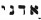

NOTES

TITLE PAGE
1. From “The Rites of Eleusis, The Rite of Mercury,” The Equinox I (6), (reprint, York Beach, ME: Weiser Books, 1992). Supplement, p. 103.
PART I
1. Aleister Crowley, The Book of Thoth by The Master Therion: A Short Essay on the Tarot of the Egyptians (London: O.T.O., 1944); The Equinox III (5), (reprint, York Beach, ME: Samuel Weiser, 1992), p. 3. All quotes from The Book of Thoth that follow are from this edition.
2. A nonprofit corporation based on the mystical-occult teachings and practice of the Holy Qebalah and Sacred Tarot, founded by Dr. Paul Foster Case, extended by Dr. Ann Davies. International Headquarters: 5101 North Figueroa Street, Los Angeles, CA 90042.
3. Lon Milo DuQuette, My Life with the Spirits (York Beach, ME: Weiser Books, Inc., 1999), pp. 68–70.
4. The Confessions of Aleister Crowley (London, 1929; abridged one-volume edition, ed. John Symonds and Kenneth Grant, London, 1969; reprint, London and New York: Arkana, 1989).
5. Judith Hawkins-Tillirson is a senior buyer for a major book distribution company and one of the most knowledgeable and respected professionals in the field of esoteric literature. She is a dear friend of the family, and was kind enough to pen the Introduction to my Tarot of Ceremonial Magick (York Beach, ME: Weiser Books, 1995).
6. Aleister Crowley to Mr. Pearson, photoengraver, May 29, 1942.
7. Nee Marguerite Frieda Bloxam, 1877–1962.
8. Harris first exhibited some of the paintings in 1941 and 1942. However, it is clear that she continued working for nearly a year after that on one or more versions that would eventually be included in the Thoth Tarot.
9. 1875–1947.
10. By 1920, Crowley still held the world's record for a number of mountaineering feats, including the greatest pace uphill (4, 000 feet in 83 minutes) at over 16,000 feet on Mexico's Iztaccihuatl in 1900; the first ascent of the Nevado de Toluca by a solitary climber 1901; and his 1902 assault on K2, where he spent 65 days on the Baltoro glacier.
11. Ghostwriting for Evangeline Adams, Crowley wrote the bulk of the material first published under her name, including her classic texts, Astrology: Your Place in the Sun (1927) and Astrology: Your Place Among the Stars (1930). These works made astrology a household word in America and Europe and catapulted Adams to celebrated status as “Astrologer to Wall Street and Washington.” Recently, Crowley's co-authorship has been graciously acknowledged by the Adams estate and has resulted in the release of Aleister Crowley and Evangeline Adams, The General Principles of Astrology (York Beach, ME: Red Wheel / Weiser, 2001).
12. It is often forgotten that the United States was very close to entering the First World War on Germany's side. Much to the horror of the German Foreign Ministry, Crowley's editorials made it appear that it was Germany's intention (in fact, its foreign policy) to engage in unrestricted submarine warfare against civilian shipping. Even though this was, at the time, an outrageous falsehood, Crowley's editorials were used to create an anti-German hysteria that would eventually sweep the United States into the conflict on England's side. In a very real way, Aleister Crowley saved his beloved England using only his pen as a magical wand.
13. Ian (Lancaster) Fleming (1908–1964)—pseudonym, Atticus—British journalist, secret service agent, writer, whose most famous creation was superhero James Bond, Agent 007. Crowley and Fleming were indeed friends. Copies of their correspondence still exists, some of which discuss matters of occult propaganda and the interrogation of Rudolf Hess.
14. He called his system “Scientific Illuminism.” Its motto: “The Method of Science—The Aim of Religion.”
15. Michele Jackson of the American Tarot Association writes, “My observations would lead me to believe that [among professional Tarot readers] the Thoth deck is second only to Rider-Waite as the most popular.”
16. Originally published in an edition limited to 200 numbered and signed copies, 1944. Reprinted by Samuel Weiser, Inc., 1969, 1974, 1986, 1991.
17. The Book of Thoth, p. 4.
18. Crowley responded to this on December 19, 1939, by writing, “You can't get out of it like that. I believe the basis of the feeling is that there should be a special prerogative to understand spiritual matters, a feeling of heirship. The fact remains that you do not employ such arrogant impertinence with regard to such subjects as logic and mathematics. Bertrand Russell is certainly a thousand times more difficult than ever I am, but you understand him better because you accept the postulate, that subjects like these must be worked at, as with you are annoyed.”
19. Israel Regardie, The Eye in the Triangle (Scottsdale, AZ: New Falcon Press, 1989), p. 59.
20. Regardie, The Eye in the Triangle; Lawrence Sutin, Do What Thou Wilt: A Life of Aleister Crowley (New York: St. Martin's Press, 2000); Roger Hutchinson, Aleister Crowley: The Beast Demystified (Edinburgh: Mainstream Publishing, 1998); and especially Richard Kaczynski, Perdurabo: The Life of Aleister Crowley (Scottsdale, AZ. New Falcon Press, 2002).
21. From George M. Lamsa, trans., The Holy Bible from Ancient Eastern Manuscripts (Philadelphia, PA: A.J. Holman Company, 1967), p. 961.
22. Sephiroth is the plural form; sephira is the singular form.
23. Harris to Aleister Crowley—January 28, 1940.
24. This letter is from the personal correspondence of the author.
25. On May 11, 1938, she was formally initiated by Crowley and took as her magical name Soror TZBA, a Hebrew word meaning “hosts” (also “army,” “arduous,” and “busy”). TZBA in Hebrew enumerates to the sacred Thelemic number 93.
26. Susan Roberts, Magician of the Golden Dawn (Chicago, IL: Contemporary Books, Inc., 1978). p. 309.
27. Co-Masonry, under the sponsorship of the Theosophical Society, operates the three Blue Lodge degrees of Freemasonry, and allows both men and women as members.
28. The concept of the Holy Guardian Angel is a key element in the Western magical tradition in general and Crowley's Scientific Illuminism in particular. See chapter 11.
29. The Equinox I (8), ed. Soror Virakam, (reprint, York Beach, ME: Samuel Weiser, 1992).
30. Crowley to Harris, December 19, 1939.
31. Two program essays are known to exist. The first, obviously an edited version of Crowley's note1s, carried the ponderous tide Exhibition of Playing Cards: The Tarot (Book of Thoth) 78 Paintings According to the Initiated Tradition and Modern Scientific Thought with Other Occult and Alchemical Designs. The second, written for the Berkeley exhibition, was written by Harris's friend Robert Cecil and was simply titled Exhibition of 78 Paintings of the Tarot Cards by Frieda Harris.
32. 1918–1985. Major Grady Louis McMurtry would also be instrumental in rescuing Crowley's magical society, Ordo Templi Orientis, from certain extinction. In the 1970s, my wife, Constance, and I had the great privilege to receive our early O.T.O. degree initiations from this remarkable and extremely colorful man.
33. In 1977, through the kind efforts of Mr. Gerald Yorke and Mr. Stephen Skinner, the paintings were again photographed and the new prints used to gready enhance the quality of subsequent editions of the Thoth Tarot.
34. A handful of atrociously reproduced prototype decks were manufactured in 1944. Neither Crowley nor Harris appears to have profited by this venture.
35. July 23, 1958, letter to Edward Bryant from the collection of Mr. Clive Harper.
36. The Book of Thoth, p. xii.
37. Harris to Crowley, date uncertain.
38. Or Projective Synthetic Geometry.
39. 1861–1925.
40. Aleister Crowley, The Book of the Law, II: 64 (York Beach, ME: Weiser Books, 1976).
41. Aleister Crowley, The Equinox of the Gods (London: O.T.O., 1936; The Equinox III (3), corrected facsimile editions (Scottsdale, AZ: New Falcon Publications, 1991) and (New York: 93 Publishing, 1992).
42. On the Stèle, Nuit, the goddess of the night sky, is seen stretching herself over the top and sides of the Stèle. As the personification of an infinitely expanded universe, we could symbolize her as the circumference of an ever-expanding circle.
43. On the Stèle, Hadit is the god pictured as a winged solar disk directly beneath the heart of Nuit. As the personification of an infinitely contracted point we could symbolize him as an ever-present point at the very center of an ever-expanding circle.
44. He did no such thing, but the story of why he chose to say that he did must be read in its entirety to appreciate Crowley's outrageously twisted sense of humor. (See The Confessions of Aleister Crowley.)
45. Lamsa, The Holy Bible from Ancient Eastern Manuscripts, 2 Kings II: 23–25.
46. The Book of the Law, I: 49.
47. Ra-Hoor-Khuit is the active aspect of the god Horus. His passive aspect is represented by his twin brother, Hoor-pa-kraat (whom the Greeks called Harpocrates).
48. In most traditional tarot decks, the four Kerubic beasts appear in the corners of the trumps Fortune and the Universe.
49. As tarot scholar Bob O'Neal points out, the sequence of trumps 13 through 21 could easily serve as flash cards illustrating the events of the Book of the Revelation.
50. Biblical tradition holds that, after the great flood, God promised Noah he would never again destroy “all flesh” by water, but that the next great ethnic cleansing would be by fire.
51. For an expanded account of the mythical adventures of Egyptian archetypal Mother-Father-Child, see Lon Milo DuQuette, The Magick of Thelema (York Beach, ME: Samuel Weiser, Inc., 1993), p. 8.
52. These directions represent the situation in the Northern Hemisphere. For the Southern Hemisphere, the directions are, of course, reversed.
53. This section was first published as part of an article for the Golden Dawn Journal (St. Paul, MN: Llewellyn Publications, 1995.) It was later published in its entirety in Angels, Demons and Gods of the New Millennium (York Beach, ME: Weiser Books, and Lon Milo DuQuette, 1997).
54. Aleister Crowley, Liber Cheth vel Vallum Abiegni.
55. To induce the visions of The Vision and The Voice Crowley utilized Enochian magick, a powerful technique of ceremonial skrying (or traveling the spirit vision) frst used by Edward Kelley and Dr. John Dee, the famous English mathematician and counselor to Elizabeth I. By reciting a series of Calls or Keys in the angelic language, Crowley systematically penetrated, in visions, the thirty Aethyrs or heavens of the Enochian celestial universe.
56. The Equinox I (5), London; (reprint, York Beach, ME: Weiser Books, 1992). Also see Aleister Crowley, The Vision and The Voice with Commentary and Other Papers, (York Beach, ME: Weiser Books, 1998), p. 67.
57. Even an hour or two of research will prove to the objective student that these terms (and many others in Crowley's writings) are merely very scary terms for very holy concepts.
58. The concept of personal guardian spirits that stand between humanity and the gods is ancient and universal. Zoroaster wrote of the Agathodaimon; the Platonic philosophers, Daemones; Socrates called his Genius.
59. “He will see annihilation where the perfected one finds immortality.” The Buddha
60. DuQuette, Angels, Demons, and Gods, p. 24.
61. The Equinox, IV (2) (reprint, York Beach, ME: Red Wheel /Weiser, 1999).
62. Frater Achad (Charles Stanfield Jones), De Mysteriis Rosae Rubeae et Aureae Crucis. Privately published, date unknown.
63. At the time, I was an active member of Abdiel Lodge of the Rosicrucian Order, AMORC, in Long Beach, California.
64. “Magister Iesus Christus—Deus est Homo—Benedictus Dominus Deus Noster qui dedit nobis Signum…”—“beneath is written the Mystic Name of the owner of the cross.”
65. “Kabbalah” is the preferred spelling among orthodox Jewish students. “Cabala” is the spelling variation most often used by Christian mystics. “Qabalah” is usually associated with the nonsectarian Hermetic applications of the art.
66. The Book of Thoth, p. 34.
67. The Sepher Yetzirah, see chapter 9.
68. The Sun (the God of our solar system) was viewed by the ancients as being surrounded by the six remaining “planets,” a concept that consecrated the number six as the sacred symbol of the macrocosm and deity.
69. The fourth element, earth, is a combination of fire, water, and air. Earth will eventually manifest as a separate element when the arms of the Great Cross are formed.
70. Don't waste time worrying about the correct pronunciation of Hebrew words. There are several main dialects, and it is certain that any attempt you make will be ridiculed by someone. Pronounce them anyway that is comfortable for you.
71. The Book of Thoth, p. 89.
72. DuQuette, Magick of Thelema, pp. 60–61.
73. The Book of Thoth, p. 18.
74. The Book of Thoth, p. 83.
75. The Book of Thoth, p. 90.
76. Recall from chapter 1, the two-fingered V for victory Crowley is said to have imparted to Winston Churchill to counteract the Nazi's solar symbol, the swastika.
77. In the Waite/Smith deck and many others, trump XX, the Last Judgment, shows a man, woman, and child arising from their tombs on judgment day. The woman is making the sign of the mourning of Isis, the child is making the sign of Apophis and Typhon, and the man is making the sign of Osiris risen.
78. The Book of Thoth, p. 30.
79. Rev. Dr. Isidor Kalisch, Sepher Yezirah—A Book on Creation; or, The Jewish Metaphysics of Remote Antiquity (New York: L. H. Frank & Co. 1877). Reprinted by The Supreme Council of The Ancient and Mystical Order Rosae Crucis, 1971. This passage is taken from chapter 1, section 1. By tradition, authorship of the Sepher Yetzirah is ascribed to the patriarch Abraham. This is highly doubtful, but the text is very ancient—perhaps the oldest philosophical treatise written in Hebrew.
80. The preexistent negativity is expressed as Ain (nothing), Ain Soph (without limit), and Ain Soph Aur (the limitless light).
81. DuQuette, Angels, Demons and Gods, p. 21.
82. The Book of Thoth, p. 180.
83. The Book of Thoth, p. 179.
84. The Book of Thoth, p. 182.
85. The Book of Thoth, p. 182.
86. The Book of Thoth, p. 182.
87. The Book of Thoth, p. 185.
88. The Book of Thoth, p. 187.
89. Yes, even the Three of Swords, Sorrow, is happy. See chapter 19.
90. Two of the tarot trumps, the Aeon (Fire) and the Universe (Saturn) serve also to represent respectively the elements of spirit and earth, and so, instead of 88 colors (4 x 22), the total number of colors for the trumps is 96 (4 x 24).
91. The Book of Thoth, pp. 278–281.
92. See chapter 13 regarding “Tzaddi is not the Star.”
93. Two additional lines are added to the 1–32 Key scale to accommodate the dual attributes of the Aeon and the Universe. They are designated “32bis” for the earth attribute of the Universe (Tau), and “31bis” for the spirit attribute of the Aeon (Shin).
94. The curious capitalization styles that characterize the names of various colors are indicative of how they were originally commercially identified. I have done my best to reproduce the original references throughout the tables and text.
95. The aces are a category of their own.
96. Harris was also burdened with having to repeatedly redo each painting. Her letters refer to more than a few instances where her repeated striping of the delicate watercolors affected the ideal coloring of the finished painting.
97. DuQuette, Angels, Demons and Gods, p. 59.
98. Aleister Crowley, with Mary Desti and Leila Waddell, Magick—Liber ABA—Book Four—Part III.; Second one–volume edition, revised and enlarged, (York Beach, ME: Weiser Books, 1997), p. 275.
99. The Book of the Sacred Magic of Abra-Melin the Mage as Delivered by Abraham the Jew Unto His Son Lamech, a Grimoire of the Fifteenth Century (London: Watkins, 1900); (reprinted NY: Dover Publications, Inc, 1975); most recent edition, Wellingborough, UK: Aquarian Press, 1983.
100. See Ruth Majereik, trans., The Chaldean Oracles of Zoroaster. (London and New York: Brill, 1989).
101. DuQuette, Angels, Demons and Gods., p. 51.
102. The Book of Thoth, p. 89. As a reminder, “redintigration” is an archaic word meaning restoration to a former state.
103. The Equinox I (5), (reprint, York Beach, ME: Weiser Books, 1992), p. 76.
104. Lon Milo DuQtette, The Chicken Qabalah of Rabbi Lamed Ben Clifford (York Beach, ME: Weiser Books, 2001), pp. 171–172.
105. DuQtette, The Magick of Thelema, p. 124.
106. Donald Michael Kraig, Modern Sex Magick (St. Paul, MN: Llewellyn Publications, 1998), p. 361.
PART II
1. Lon Milo DuQuette.
2. First edition published in 1938 by Ordo Templi Orientis, London. Revised edition. (Scottsdale, AZ: New Falcon Publications, 1992.)
3. Titles vary among different decks. For example: King, Queen, Knight, Page; King, Queen, Prince, and Princess.
4. The theory I personally prefer holds that the Major Arcana expresses the dynamics of Briah, and the Minor Arcana that of Yetzirah. But, as each suit is an harmonic expression of one of the four Qabalistic worlds, the characterizations of any given card can become extremely difficult to follow.
5. The Book of Thoth, p. 44.
6. The Book of Thoth, p. 189.
7. Demiourgos or Demiurge, a creator god who mistakenly thinks it is the Supreme Deity. Tetragrammaton is Latin for  YHVH the Hebrew Demiourgos.
YHVH the Hebrew Demiourgos.
8. The Book of Thoth, p. 189.
9. The Book of the Law, 1: 57.
10. See Robert O'Neill, Tarot Symbolism (Lima, OH: Fairway Press, 1986), p. 293.
11. The Book of the Law, 1: 57.
12. Harris to Crowley, September 18, 1939.
13. Aleister Crowley, The Law Is for All (Scottsdale, AZ: New Falcon Publications, 1991), p.142.
14. The Book of the Law, I: 57.
15. The Book of the Law, 1: 57.
16. The Book of Thoth, p. 77.
17. The Book of Thoth, p. 75.
18. The Book of Thoth, p. 67.
19. Aleister Crowley, 777 and Other Qabalistic Writings (York Beach, ME: Weiser Books, Inc. 1986), Column CLXXXI, p. 34.
20. Aleister Crowley, “General Characters of the Trumps as They Appear in Use,” The Book of Thoth, pp. 253–254.
21. Harris to Crowley, date uncertain.
22. The Book of Thoth, p. 118.
23. See chapter 8.
24. See the Chariot.
25. The Book of Thoth, p. 69.
26. The Book of Thoth, p. 69.
27. Crowley, 777 and Other Qabalistic Writings, Column CLXXXI, p. 34.
28. The Book of Thoth, p. 254.
29. Harris to Crowley, May 11, 1941.
30. See Aleister Crowley, The Vision and The Voice, p. 211.
31. The Book of Thoth, p. 69.
32. The Book of Thoth, p. 70.
33. The Book of Thoth, p. 72.
34. Liber Magi, vv. 7–10, and The Book of Thoth, p. 71.
35. I welcome this opportunity to disabuse whoever it was who suggested that, in this card, Mercury is standing tiptoe upon the tip of a surfboard-shaped altar.
36. Crowley, 777 and Other Qabalistic Writings; Column CLXXXI, p. 34.
37. The Book of Thoth; p. 254.
38. The Book of Thoth; p. 112.
39. The Book of Thoth; p. 74.
40. The Book of Thoth; p. 73.
41. Olive Whicher, Sunspace: Science at a Threshold of Spiritual Understanding (London: Rudolf Steiner Press, 1989).
42. Compare with the Queen of Cups.
43. The Book of Thoth; p. 73.
44. Crowley, 777 and Other Qabalistic Writings, Column CLXXXI, p. 34.
45. The Book of Thoth; p. 255.
46. The Book of Thoth; p. 75.
47. The Book of Thoth; p. 75.
48. The Book of Thoth; p. 77.
49. Aleister Crowley, Orpheus, Liber Primus Vel Carminum in Collected Works, vol. III (Foyers, Society for the Propagation of Religious Truth, 1907; reprint, Chicago, IL: Yogi Publications), p. 155.
50. Crowley, 777 and Other Qabalistic Writings; Column CLXXXI, p. 34.
51. The Book of Thoth; p. 259.
52. Harris to Crowley, May 21, 1941.
53. The Book of Thoth; p. 78.
54. The Book of the Law, I: 57.
55. The Book of Thoth; p. 77.
56. The Book of Thoth; p. 77.
57. The Book of Thoth; p. 79.
58. Crowley 777 and Other Qabalistic Writings; Column CLXXXI, p. 34.
59. The Book of Thoth; p. 255.
60. Harris to Crowley, January 28, 1940.
61. The Book of the Law; III:11.
62. The Book of Thoth; p. 79.
63. The Book of Thoth; p. 79.
64. Crowley, Vision and the Voice, p. 67.
65. Crowley777 and Other Qabalistic Writings, Column CLXXXI, p. 34.
66. The Book of Thoth; p. 256.
67. Harris to Crowley, date uncertain.
68. The Book of Thoth; p. 83.
69. The Book of Thoth; p. 82.
70. We will find the upward arrow in the Art card.
71. Crowley Vision and The Voice, p. 202.
72. Crowley, 777 and Other Qabalistic Writings, Column CLXXXI, p. 34.
73. The Book of Thoth; p. 256.
74. Harris to Crowley, May 11, 1941.
75. Crowley, Vision and The Voice, pp. 148,149.
76. The Book of Thoth; p. 256.
77. Crowley, 777 and Other Qabalistic Writings; Column CLXXXI, p. 34.
78. The Book of Thoth; p. 256.
79. The Book of Thoth; p. 88.
80. Harris to Crowley sometime between November 3 and December 19, 1939.
81. Crowley to Harris, December 19, 1939.
82. Aubrey Beardsley (1872–1898), brilliant and controversial artist and illustrator.
83. Harris to Crowley, July 12, (1940?).
84. See comments on Atu XXI, the Universe.
85. The Book of Thoth, p. 86.
86. Crowley, 777 and Other Qabalistic Writings, Column CLXXXI, p. 34.
87. The Book of Thoth, p. 257.
88. Harris to Crowley, November 30, 1939.
89. The Book of Thoth, p. 89.
90. The Book of Thoth, p. 89.
91. The Book of Thoth, p. 89.
92. The obsolete theory of preformationism posits that prior to conception, living beings exist microscopically fully formed.
93. Crowley, 777 and Other Qabalistic Writings, Column CLXXXI, p. 34.
94. The Book of Thoth, pp. 253-260.
95. Harris to Crowley, May 10, 1939.
96. The Book of Thoth, p. 90.
97. See chapter 8.
98. In rough Latin, “That central thing in the middle of three other things.”
99. Aleister Crowley et al., from “The Rite of Jupiter,” and “The Rites of Eleusis,” The Equinox I (6), Supplement, p. 25.
100. Crowley, 777 and Other Qabalistic Writings, Column CLXXXI, p. 34.
101. The Book of Thoth, pp. 253-260.
102. Letter from Frieda Harris to Aleister Crowley, March 25, 1942.
103. Later in Crowley's visionary cycle the spelling of the goddess's name changes to “Babalon.” See Crowley and The Vision and The Voice, p. 159.
104. Seven aspects of Crowley as the Beast. “The Head of an Angel: the head of a Saint: the head of a Poet: the head of an Adulterous Woman: the head of a Man of Valour: the head of a Satyr: and the head of a Lion-Serpent.” See Aleister Crowley, The Book of Lies (York Beach, ME: Red Wheel I Weiser, 1981), p.108.
105. Crowley, Vision and The Voice, p. 150.
106. Crowley, 777 and Other Qabalistic Writings,. Column CLXXXI, p. 34.
107. The Book of Thoth, pp. 253-260.
108. Harris to Crowley, November/December (date uncertain) 1939.
109. Crowley to Harris, December 19, 1939.
110. The Book of Thoth, p. 97.
111. The Book of Thoth, p. 96.
112. The Book of Thoth, p. 97.
113. The Book of Thoth, p. 96.
114. The Book of Thoth, p. 96.
115. Crowley, 777 and Other Qabalistic Writings, Column CLXXXI, p. 34.
116. The Book of Thoth, pp. 253-260.
117. Harris to Crowley, November/December (date uncertain) 1939.
118. The Book of Thoth, p. 99.
119. The Book of Thoth, pp. 99, 100.
120. The Book of Thoth, p. 100.
121. The Book of Thoth, p. 100.
122. The Book of Thoth, p. 103.
123. The Book of Thoth, p. 100.
124. Crowley, 777 and Other Qabalistic Writings, Column CLXXXI, p. 34.
125. The Book of Thoth, pp. 253-260.
126. Harris to Crowley, (date uncertain) 1939.
127. The Book of Thoth, p. 102.
128. The Book of Thoth, p. 103.
129. Crowley, 777 and Other Qabalistic Writings, Column CLXXXI, p. 34.
130. The Book of Thoth; pp. 253-260.
131. Aleister Crowley, Magick, Liber ABA, Book Four. 2nd ed. rev., ed. Hymenaeus Beta, (York Beach, ME: Weiser Books, 1994), p. 277.
132. The Book of Thoth, p. 105.
133. The Book of Thoth, p. 107.
134. The Book of Thoth, p. 106.
135. From Aleister Crowley, Konx Om Pax (Chicago, IL: Teitan Press, 1990), p. 10.
136. Crowley, 777 and Other Qabalistic Writings, Column CLXXXI, p. 34.
137. The Book of Thoth, pp. 253-260.
138. Harris to Crowley, date uncertain.
139. The Book of Thoth, p. 107.
140. The Book of Thoth, p. 108.
141. The Book of Thoth, p. 109.
142. The Book of Thoth, pp. 108-109.
143. Crowley, 777 and Other Qabalistic Writings, Column CLXXXI, p. 34.
144. The Book of Thoth, pp. 253-260.
145. Harris to Crowley, date uncertain.
146. The Book of Thoth, p. 109.
147. The Book of Thoth, p. 109.
148. Aleister Crowley, Liber LXV, from The Holy Books of Thelema (York Beach, ME: Weiser Books, Inc., 1983), p. 83.
149. The Book of the Law 1: 58.
150. Crowley, 777 and Other Qabalistic Writings, Column CLXXXI, p. 34.
151. The Book of Thoth, pp. 253-260. The version from Crowley's The Heart of the Master (Scottsdale, AZ. New Falcon Publications, 1999) contains the additional line “[Roll up the Excrement of the Earth, to create a Star!]”
152. The Book of Thoth, p. 112.
153. The Book of Thoth, p. 112.
154. The Book of Thoth, p. 113.
155. Crowley, 777 and Other Qabalistic Writings; Column CLXXXI, p. 34.
156. The Book of Thoth, pp. 253-260.
157. The Book of the Law, 1: 3.
158. The Book of Thoth, p. 113.
159. The Book of the Law. The spelling varies in the texts.
160. The Book of the Law III: 35: “The half of the word of Heru-ra-ha, called Hoor-pa-kraat and Ra-Hoor-Khut.”
161. The Book of Thoth, p. 114.
162. Crowley, 777 and Other Qabalistic Writings, Column CLXXXI, p. 34.
163. The Book of Thoth, pp. 253-260.
164. The Book of the Law, I: 49.
165. The Book of the Law, II, 3, 4.
166. The Book of Thoth, p. 116.
167. Crowley, 777 and Other Qabalistic Writings, Column CLXXXI, p. 34.
168. The Book of Thoth, p. 260.
169. Harris to Crowley, date uncertain.
170. The Book of Thoth, p. 118.
171. The Book of Thoth, pp. 116, 117.
172. The Canon was first published in 1897 by Elkin Matthews. The second edition was published by Research into Lost Knowledge Organisation in association with The Garnstone Press in 1974. Third edition published in 1981 by Research into Lost Knowledge Organisation, 8 The Drive, New Southgate, London N11 2DY. Distributed by Thorson's publishers Limited, Wellingborough, Northamptonshire.
173. Numbers 2:2.
174. The zodiacal year can be divided into seventy-two quinaries, or periods of five degrees. Each of the thirty-six small cards of the tarot represents two quinaries or one decan.
175. First edition, London: Ernest Benn LTD., 1928.
176. The Book of Thoth, p. 119.
177. See glossary, chapter 21.
178. The Book of Thoth, p. 118.
179. Or, if you prefer—elevated his initiatory consciousness from that represented bythe fourth sephira, Chesed, to that of the third Sephira, Binah.
180. Crowley, The Vision and The Voice.
181. Crowley, The Vision and The Voice, pp. 174, 175.
182. Crowley, Konx Om Pax, p. 10.
183. Crowley, Konx Om Pax, p. 7.
184. Rabbi Lamed Ben Clifford.
185. The Book of Thoth, p. 177.
186. Matti Pitkänen. Department of Physics, Theoretical Physics Division, 2000.
187. The Book of Thoth, p. 177.
188. Harris to Crowley, date uncertain.
189. The Book of Thoth, p. 188.
190. This paraphrased from Crowley's comment on the Ace of Cups, The Book of Thoth, p.195.
191. The Book of Thoth, p. 195.
192. The Book of Thoth, p. 79.
193. The Book of Thoth, p. 202.
194. The Book of Thoth, p. 203.
195. Crowley, Magick, LiberABA, Book Four, p. 86.
196. The Book of Thoth, p. 211.
197. The Book of Thoth, p. 149.
198. I believe, at the moment, her marvelous essay is only published on herwebsite http://members.cts.com/king/slsaoirse/TarotCards.html, Copyright, © 1999.
199. Isabel Briggs Myers, Gifts Differing, (Consulting Psychologists Press, Palo Alto), 1995.
200. Arthur Rosengarten, Psychology and Tarot: Spectrums of Possibility (New York: Paragon House, 2000).
201. The entire zodiacal year is divided into 360 degrees, and each of the twelve signs of the zodiac is composed of thirty degrees. The thirty-degree period of a zodiac sign is divided into three ten-degree periods called decans.
202. The Book of Thoth, p. 151.
203. The Book of Thoth, p. 152.
204. The Book of Thoth, p. 153.
205. The Book of Thoth, p. 154.
206. See Leon Engers-Kennedy's famous painting of Crowley in Equinox III (1).
207. The Book of Thoth, p. 153, 154.
208. Harris to Crowley—date uncertain.
209. The Book of Thoth, p. 155.
210. The Book of Thoth, p. 155.
211. The Book of Thoth, p. 156.
212. The Book of Thoth, p. 156.
213. The Book of Thoth, p. 156.
214. The Book of Thoth, p. 157.
215. This is just the kind of comment one would expect from a Queen of Cups.
216. The Book of Thoth, p. 157.
217. The Book of Thoth, p. 158.
218. The Book of Thoth, p. 158.
219. The Book of Thoth, p. 158.
220. The Book of Thoth, p. 159.
221. Harris to Crowley, date uncertain.
222. The Book of Thoth, p. 160.
223. The Book of Thoth, p. 161.
224. The Book of Thoth, p. 161.
225. The Book of Thoth, p. 161.
226. The Book of Thoth, p. 163.
227. The Book of Thoth, p. 162.
228. The Book of Thoth, p. 162.
229. The Book of Thoth, p. 163.
230. The Book of Thoth; p. 163.
231. Harris to Crowley, November 3,1939.
232. The Book of Thoth; p. 164.
233. The Book of Thoth, p. 166
234. The Book of Thoth, p. 166.
235. The Book of Thoth, p. 166.
236. The Book of Thoth, p. 166.
237. The Book of Thoth, p. 166.
238. Harris to Crowley—date uncertain.
239. The Book of Thoth, p. 167.
240. The Book of Thoth, p. 167.
241. Harris to Crowley, December 11, 1942.
242. The Book of Thoth, p. 169.
243. The Book of Thoth, p. 149.
244. The Book of Thoth, p 169.
245. The Book of Thoth, p. 169.
246. The Book of Thoth, p. 171.
247. Lon Milo DuQuette, Tarot of Ceremonial Magick, (York Beach, ME: Red Wheel/Weiser, 1995), p. 121.
248. Obviously, because there are seven planets and thirty-six decans, we are left at the end of the year with one extra decan. This is remedied by having Mars repeat at the end of winter and the beginning of spring—to give, as it were, an extra dose of energy to overcome winter. Don't blame me. I didn't invent this system!
249. Joan Quigley, Astrology for Adults (New York: Holt, Rinehart and Winston, 1969), p. 131.
250. The Book of Thoth, p. 178.
251. The Book of Thoth, p. 189.
252. They are actually Phurbas or Kilas, the Tibetan triple-sided ritual daggerl nail/dart/spike.
253. The Book of Thoth, p. 189.
254. On the Tree of Life, the sixth sephira, Tiphareth, is by tradition the sphere of the Sun.
255. The Book of Thoth, p. 178.
256. The Book of Thoth, p. 190.
257. The Book of Thoth, p. 182.
258. The Book of Thoth, p. 182.
259. The Book of Thoth, p. 193.
260. The Book of Thoth, p. 193.
261. The Book of Thoth, p. 193.
262. The Book of Thoth, p. 186.
263. The Book of Thoth, p. 185.
264. The Book of Thoth, pp. 193, 194.
265. The Book of Thoth, p. 186.
266. The Book of Thoth, p. 194.
267. The Book of Thoth, p. 194.
268. The Book of Thoth, pp. 194, 195.
269. Harris to Crowley, March 25, 1942.
270. The Book of Thoth, p. 196.
271. The Book of Thoth, p. 196.
272. The Book of Thoth, p. 196.
273. The Book of Thoth, p. 197.
274. The Book of Thoth, p. 199.
275. The Book of Thoth, p. 182.
276. The Book of Thoth, p. 200.
277. The Book of Thoth, p. 184.
278. “Countin' Flowers On the Wall,” written by Lew Dewitt. © Wallflower Music/Copyright Management.
279. The Book of Thoth, p. 184.
280. The Book of Thoth, p. 201.
281. Crowley to Harris, December 19, 1939.
282. DQuette, Tarot of Ceremonial Magick, p. 166.
283. The Book of Thoth, p. 202.
284. Harris to Crowley, date uncertain.
285. Harris to Crowley, November 3, 1939.
286. The Book of Thoth, p. 205.
287. The Book of Thoth, p. 205.
288. The Book of Thoth, p. 205.
289. Harris to Crowley, November 3, 1939.
290. The Book of Thoth, p. 183.
291. The Book of Thoth, p. 207.
292. The Book of Thoth, p. 186.
293. The Book of Thoth, p. 208.
294. The Book of Thoth, pp. 208,209.
295. Harris to Crowley, September 18, 1939.
296. The Book of Thoth, p. 209.
297. The Book of Thoth, p. 212.
298. The Book of Thoth, p. 178.
299. Aleister Crowley, Liber ILXV, Liber Cordis Cincti Sepente, sub figura

from The Holy Books ofThelema, p. 66.300. Harris to Crowley, January 7, 1940.
301. The Book of Thoth, pp. 212, 213.
302. See chapter 8, and Fortune.
303. The Book of Thoth, p. 213.
304. See “The Rites of Eleusis,” The Equinox I (6), Supplement p. 10.
305. See Five of Swords.
306. The Book of Thoth, p. 181.
307. The Book of Thoth, p. 215.
308. The Book of Thoth, p. 215.
309. The Book of Thoth, p. 215.
310. The Book of Thoth, p. 183.
311. The Book of Thoth, p. 216.
312. The Book of Thoth, p. 216.
313. The Book of Thoth, p. 187.
314. The Book of Thoth, p. 217.
315. I cannot resist mentioning that the Egyptian ibis, the long-beaked water bird sacred to Thoth, was known even in ancient times for its ability to use its beak to self-administer enemas.
316. The Book of Thoth, p. 217.
317. The Book of Thoth, p. 188.
318. Harris to Crowley, date uncertain.
319. Frater Perdurabo (Aleister Crowley). Aleister Crowley, Tarot Divination (York Beach, ME: Red Wheel I Weiser, 1976), p. 300.
320. Aleister Crowley Memorandum regarding “Stipend”—date uncertain.
321. The Equinox vol. I. (reprint, York Beach, ME: Weiser Books 1992).
322. From “A Description of the Cards of the Tarot with their Attribution; Including a Method of Divination by Their Use, “Equinox, I (7), pp. 206-210).
323. Crowley is assuming that the Significator is a court card. The counting begins with the Significator in the direction the figure in the card is facing. This is not always easy to determine in the Thoth Tarot.—Ed.
324. DuQuette, The Book of Thoth, pp. 253-260.
325. A Description of the Cards, Equinox, I (7), pp.143-210.
326. See description of original design, page 263.
327. The Magick of Thelema, p. 216.
328. The Book of Thoth, p. 85.
329. The Book of Thoth, p. 37.
330. The Magick of Thelema, p. 216.
331. The Equinox I (5).
332. The Book of Thoth, p. 90.
333. The Book of Thoth, p. 115.
334. The Magick of Thelema, p. 80.
335. The Book of Thoth, p. 70.
336. The Book of Thoth, p. 85.
337. The Book of Thoth, p. 85.
338. DuQuette, The Magick of Thelema, p. 80
339. The Book of Thoth, p. 85.
340. DuQudette, The Magick of Thelema, p. 81.
341. The Book of Thoth, p.75.
342. The Book of Thoth, p. 79.
343. Paraphrased from Kalisch, Sepher Yezirah, p. 14.